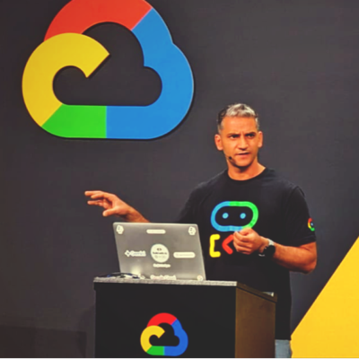
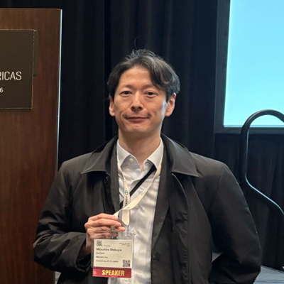
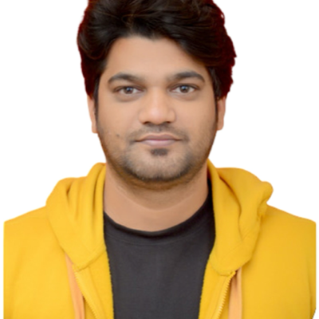

SPEAKERS
Confirmed Speakers
11 speakers confirmed so far for CloudCon Sydney 2026. More are announced as speakers confirm.

Andrew Jeffree
Senior Staff Engineer
SafetyCulture

Anupam Phoghat
Principal
Core-X
Ayush Goyal
Senior Software Engineer
Grafana Labs
Charlotte Fleming
Researcher, Developer Relations
Octopus Deploy
Jacob Taylor
Staff Engineer
Canva
Liz Fong-Jones
Technical Fellow
Honeycomb.io

Mitsuhiro Shibuya
Site Reliability Engineer
Mercari
Olga Mirensky
Senior Staff Site Reliability Engineer
Ping Identity

Osama Okunbo
Security Engineer
Immibuddy

Saurabh Mishra
Lead Consultant
Vodafone
Vasilios Syrakis
Senior Systems Engineer